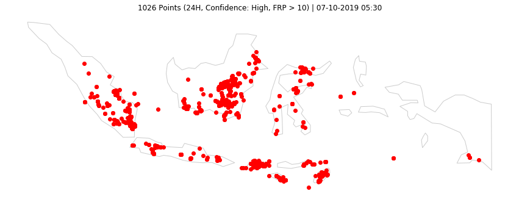
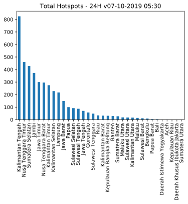

Last updated: 07-10-2019 05:30
Data VIIRS (NASA FIRMS)
Titik Api @Indonesia
4362 (24H) | 6336 (48H) | 14890 (7D)
Olah Data dan Visualisasi Sebaran Titik Api di Indonesia.
Acq. Date: 05-10-2019 11:12 -- 07-10-2019 01:18 WIB (24H) | 04-10-2019 11:30 -- 07-10-2019 01:18 WIB (48H) | 29-09-2019 11:24 -- 07-10-2019 01:18 WIB (7D)
Home Top 3 GitHub Sumatera Kalimantan Sulawesi Maluku & Papua Jawa Bali & NT

Data 24H
| Kategori | #Titik |
|---|---|
| Confidence High | 122 |
| Confidence Nominal | 3651 |
| Confidence Low | 589 |
| Total | 4362 |
| Confidence High or FRP>10 | 1026 |
Data 48H
| Kategori | #Titik |
|---|---|
| Confidence High | 267 |
| Confidence Nominal | 5178 |
| Confidence Low | 891 |
| Total | 6336 |
| Confidence High or FRP>10 | 1481 |
Data 24H
| # | Provinsi | Total | H | N | L | HFRP10 |
|---|---|---|---|---|---|---|
| 1 | Kalimantan Tengah | 825 | 18 | 607 | 200 | 231 |
| 2 | Nusa Tenggara Timur | 460 | 15 | 383 | 62 | 77 |
| 3 | Sumatera Selatan | 428 | 30 | 382 | 16 | 136 |
| 4 | Jambi | 373 | 19 | 346 | 8 | 125 |
| 5 | Jawa Timur | 300 | 2 | 223 | 75 | 28 |
| 6 | Nusa Tenggara Barat | 296 | 5 | 253 | 38 | 71 |
| 7 | Kalimantan Timur | 275 | 0 | 251 | 24 | 74 |
| 8 | Kalimantan Selatan | 228 | 2 | 169 | 57 | 44 |
| 9 | Lampung | 217 | 11 | 199 | 7 | 77 |
| 10 | Jawa Barat | 149 | 3 | 122 | 24 | 24 |
Data 48H
| # | Provinsi | Total | H | N | L | HFRP10 |
|---|---|---|---|---|---|---|
| 1 | Kalimantan Tengah | 929 | 19 | 708 | 202 | 256 |
| 2 | Sumatera Selatan | 749 | 35 | 548 | 166 | 238 |
| 3 | Nusa Tenggara Timur | 693 | 41 | 576 | 76 | 122 |
| 4 | Nusa Tenggara Barat | 655 | 90 | 502 | 63 | 194 |
| 5 | Jawa Timur | 645 | 10 | 525 | 110 | 91 |
| 6 | Jambi | 447 | 22 | 410 | 15 | 131 |
| 7 | Kalimantan Timur | 302 | 1 | 273 | 28 | 81 |
| 8 | Kalimantan Selatan | 280 | 3 | 219 | 58 | 46 |
| 9 | Lampung | 244 | 11 | 217 | 16 | 80 |
| 10 | Jawa Barat | 229 | 4 | 171 | 54 | 43 |
Data 24H

Data 48H